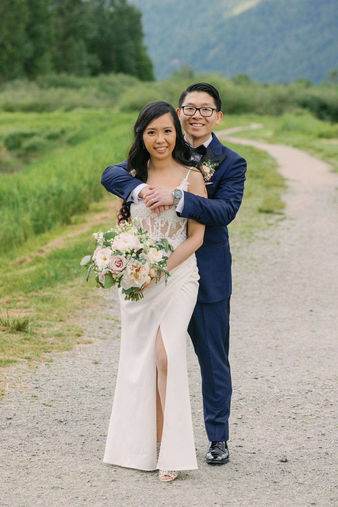
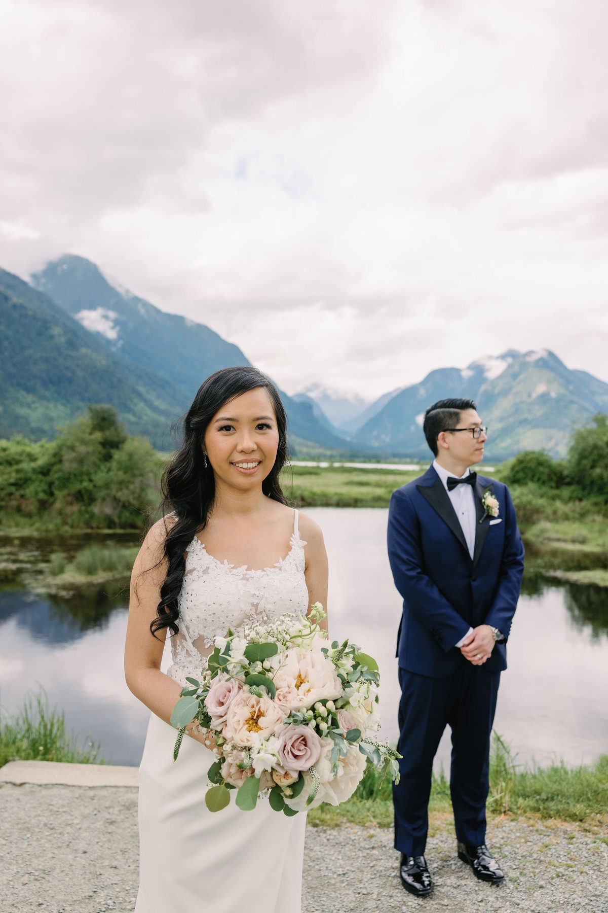
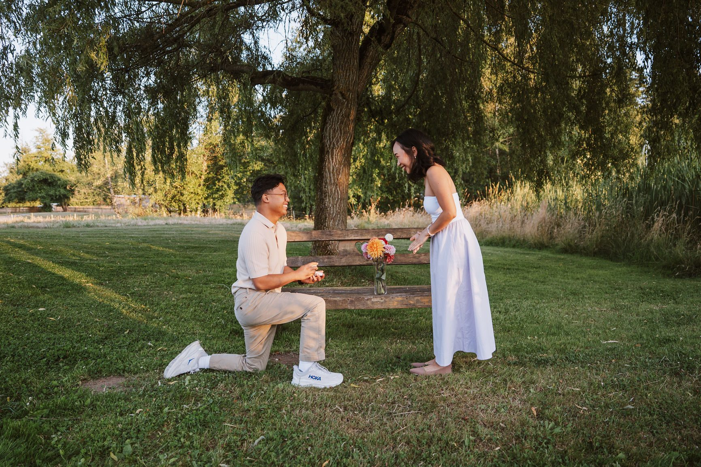
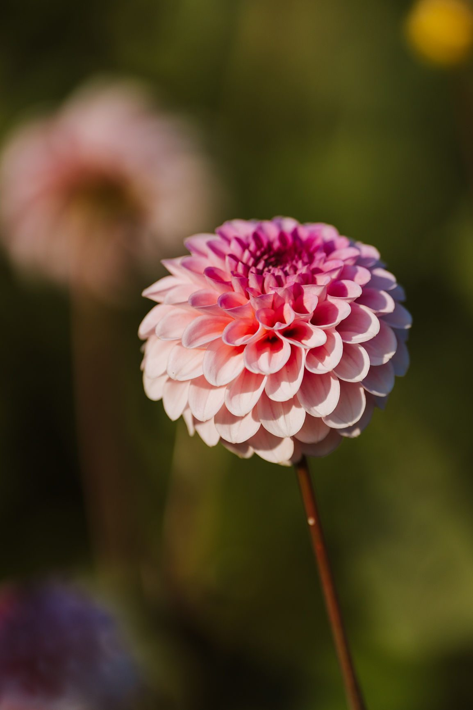
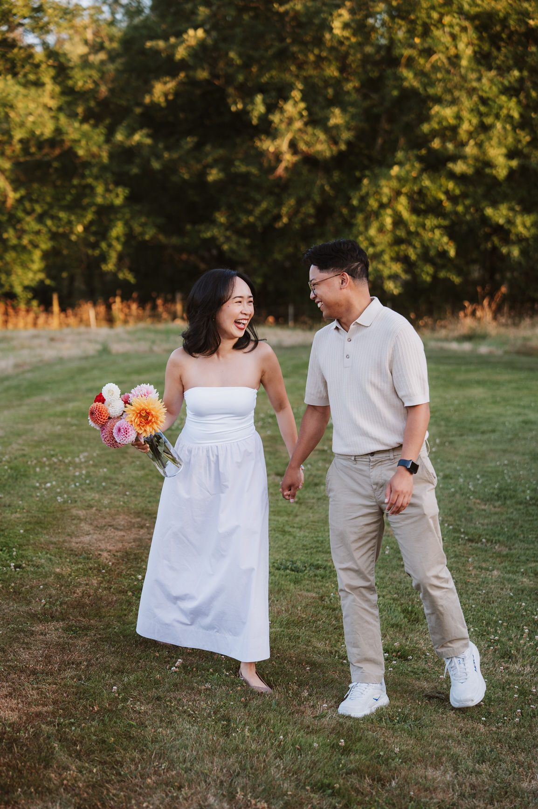
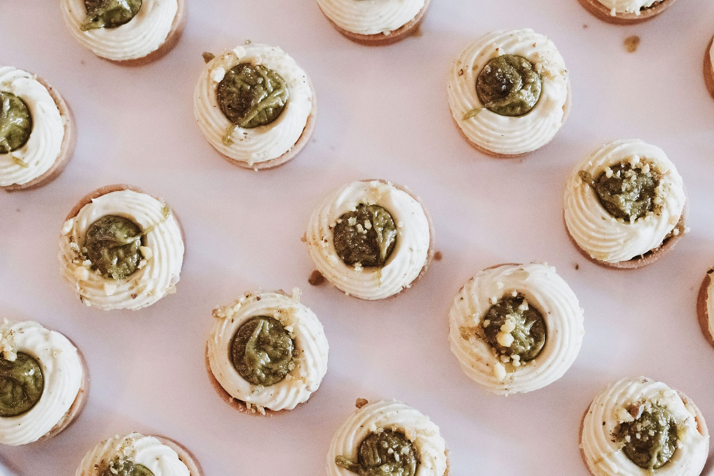
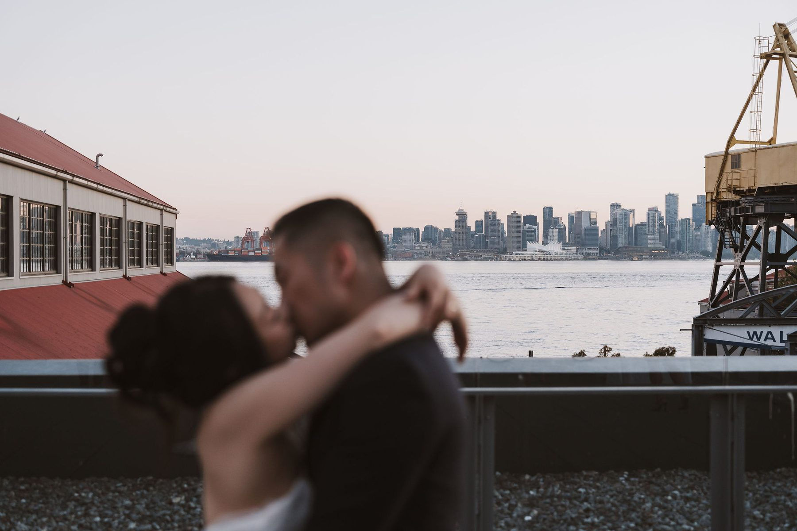
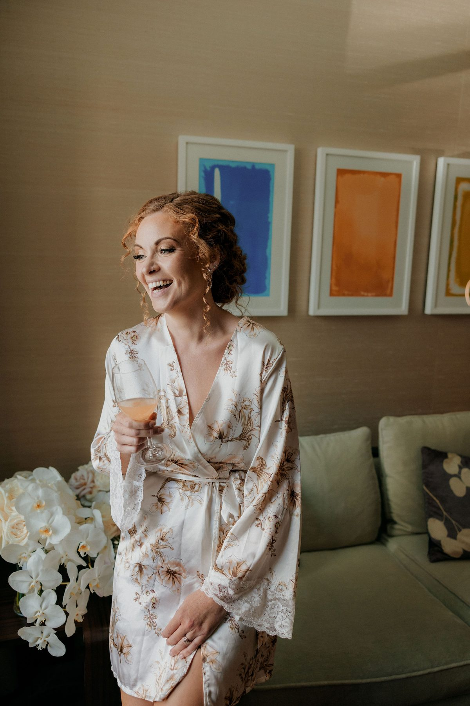

Everyone assumes summer is the obvious choice. And yes, summer in Vancouver is beautiful. But it's also peak season — which means higher prices, more competition for popular locations, and some genuinely difficult midday light for photography.
Here's a real breakdown of what each season looks like, so you can make the call that's right for you.

Spring (March – May): Underrated and Stunning
Spring in Vancouver is extraordinary for photographers. The cherry blossoms hit in late March through early April — Vancouver has some of the most prolific cherry blossom displays in North America, and they're absolutely breathtaking for outdoor portraits. Add in the first green of the season, wildflowers at Lighthouse Park and in the North Shore forests, and long golden hours as the days stretch out.
The weather is unpredictable. You'll get some rain. But overcast light is actually ideal for portraits — soft, even, no harsh shadows — and many of our favourite images have come from grey spring days. A light drizzle in a cedar forest looks incredible on camera.

If you want blooms, book late March or early April and watch the blossom forecasts. They peak fast and drop within a week or two. Worth timing it right.
Crowd advantage: spring is quieter than summer at most locations. You'll have Stanley Park to yourselves at 7am in April in a way you simply won't in July.

Summer (June – August): Peak Season, and There's a Reason
Summer is the most popular time to get married in Vancouver, and it earns it. Long days mean late golden hours — often 9pm in June and July, which gives you incredible flexibility. The mountains are accessible. Joffre Lakes is open. Wildflowers are at their peak in the alpine. Bowen Island is at its most lush.
The tradeoffs: midday light is harsh and flat, so plan around sunrise or golden hour. Popular locations get crowded — you'll want an early or late time slot, not 2pm on a Saturday at Lighthouse Park. And vendor prices are at their highest.

Summer is still our busiest season for good reason. If you love the idea of long warm evenings and maximum light, it's hard to argue against.
Fall (September – November): Our Honest Favourite
We'll say it plainly: fall is our favourite season to photograph in Vancouver. The light in September and October is warm and golden in a way summer light simply isn't. The crowds thin out after Labour Day. Prices drop. And the colour — the maples and birches going gold and red — gives you something no other season offers.

Lynn Canyon in October. The trails around Lighthouse Park. UBC's campus with the vine maples. It all photographs incredibly.
The window is shorter. By November you're in genuine fall-into-winter transition, which can be magical (moody, dramatic) or just grey and wet depending on the week. September and October are reliable. November is an adventure.

If you're open to fall and your date is flexible, September or October is our strongest recommendation.
Winter (December – February): More Beautiful Than You'd Think
Vancouver winters are mild by Canadian standards — you're not dealing with -20 and a blizzard. What you are dealing with is short days, frequent rain, and limited window for outdoor photography.

But here's the thing: winter elopements in Vancouver have a look you can't replicate in any other season. Mist in the trees. Low dramatic light. Empty beaches. Snow on the North Shore mountains. The city glowing at dusk. It's moody, cinematic, and genuinely beautiful for the couple who leans into it rather than fights it.
Golden hour in December is around 4pm, which means you don't have to be up at dawn. A mid-afternoon ceremony followed by portraits in that low winter light — it's a real option, and it photographs extraordinarily well.

Crowd advantage: you will not be competing with anyone at Lighthouse Park in January at 3pm. It's yours.
The Short Answer
If you want warmth and long days: June or July. If you want the best combination of light, colour, and atmosphere: September or October. If you want to elope with no one else around: January or February. If you want cherry blossoms: late March.

All four seasons work. The best season is the one that matches what you actually want the day to feel like.
Ready to Plan Your Vancouver Wedding?
SimplyWed Studio photographs weddings and elopements throughout Vancouver, the Lower Mainland, and BC. We know these locations, we know the light, and we love showing up for couples who want their day to feel real.
Get in touch at simplywedstudio.com/contact.
SimplyWed Studio photographs elopements and intimate weddings throughout Vancouver, the Lower Mainland, and BC. Based in Vancouver.
← Back to the journal